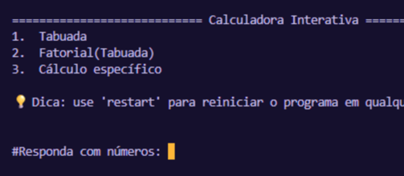
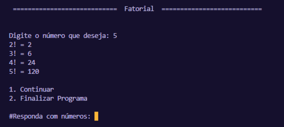
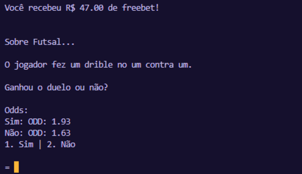

Projetos
Calculadora Interativa
Uma calculadora interativa desenvolvida em Python, com menus dinâmicos, validação de entradas e várias operações matemáticas, incluindo tabuada, fatorial, porcentagem, potenciação, raiz quadrada e muito mais. O projeto possui sistema de reinicialização, tratamento de erros e interface amigável no terminal.


Aposte Já (Simulador de Apostas Esportivas)
Projeto desenvolvido em Python que simula uma casa de apostas esportivas com odds reais, eventos aleatórios e gerenciamento completo de saldo. O programa sorteia cenários de diferentes esportes (futebol, futsal, vôlei e surf), mostra as probabilidades, permite ao usuário escolher seu palpite e calcula automaticamente vitórias, perdas e novo saldo.
